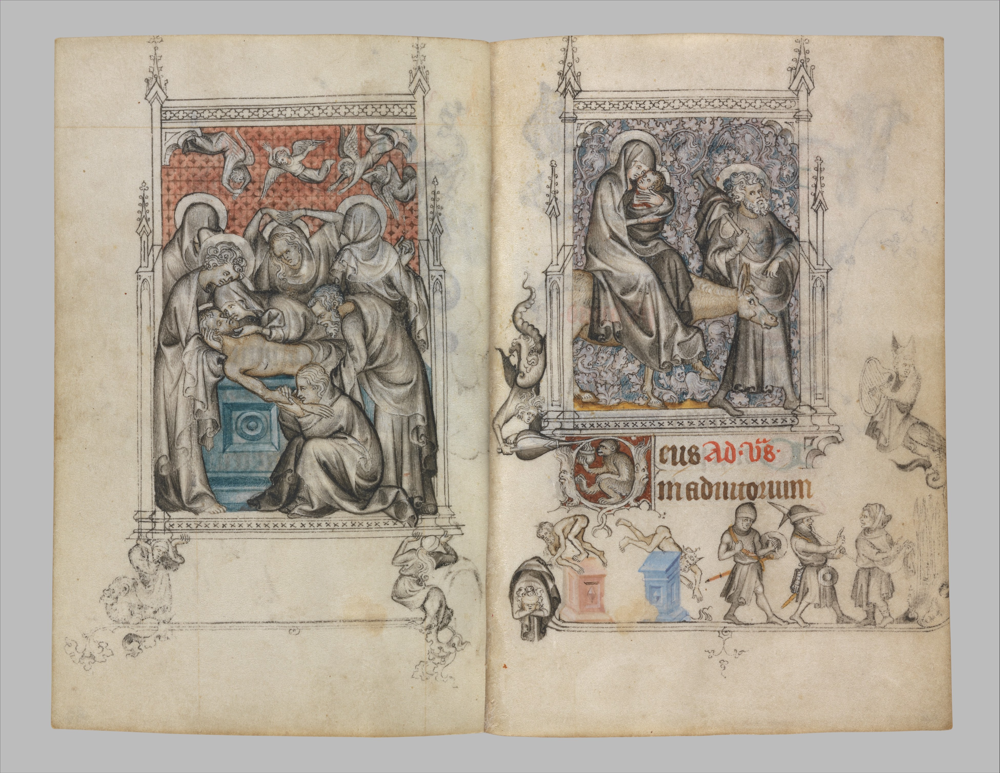

An Analysis of the Hours of Jeanne d'Evreux
by Sydney Ulrich
start
Introduction
The 14th century was an era of distress for Europe, with the Hundred Years War beginning in
1337 due to the French-English Edward III making claims to the French throne, and the Black Plague, which wiped out
25 million people in Europe alone, approximately one third of the population at the time. But the period also
ushered in distinct identities of art among regions, and the beginnings of the Italian Renaissance. In the midst of all
of this, distribution of knowledge, religion and art continue to thrive. Particularly, in this time period, the
Book of Hours, a prayer book, not only thrived, but spread rapidly. Because of this, many books of hours still exist
today, but few are as ornamental or diverse as Jean Pucelle’s Hours of Jeanne d’Evreux. A masterpiece in many ways, the
book uses ornamentation of initials, illustrations, and writing without being overly gaudy.
FIGURE 1: Example page from the Hours of Jeanne d'Evreux, 1324, Paris, now featured in the Met
Museum in NYC. The first two sentences reading "Deus, in adiutorium meum intende.
Domine, ad adiuvandum me festina." This translates to the call "O God, come to my assistance. O Lord, make
haste to help me." A historiated inital the the top depicts a man playing a triangle.
Sentences are separated with marginalia of men playing instruments or holding weapons, as well as capitla
letters in blue with
swashes of decoration surrounding it.
Thesis
To what extend did the different European cultures inform the design of the Hours of Jeanne
d’Evreux
and what makes it so unique for its time?
Book of Hours
A book of hours is a medieval prayer book used by nonclergy for devotion. Typically, it contains
eight
sets of devotions meant to be prayed throughout the day beginning with Matins at midnight and ending with
Compline
at nine pm. This part of the book is referred to as the Hours of the Virgin and is the most important aspect of
the
book. Alongside this can be any number of texts, from a calendar, gospel lessons, prayers to saints, to psalms
of
penitence.
FIGURE 2: Example page from Hours of Jeanne d'Evreux, 1324, Paris, now featured in the MET Museum,
NYC.
The page refers to Sextam, the Hour of the Virgin taking place at noon. The text starts with the same latin
words as
Figure 1. The page continues in saying "Gloria Patri, et Filio: et Spiritui sancto. Sicut erat in pricipio,
et nunc, et semper..."
which translates to Glory be to the Father, and to the Son: and to the Holy Ghost. Even as it was in the
beginning,
and now, and ever..." Many of the hours begin in just the same way. Alongside the text can be seen monks,
instrumentalists,
animals and other drolleries which separate the text and circle around the text to draw the readers eyes
back in.
Who was Jeanne d'Evreux?
Jeanne d’Evreux was the queen of France and third wife to Charles IV. Married in 1324, they were
married
just four years before his death in 1328. She gave him three daughters and no male heirs despite being just 14
when
they were married. She is said to have been incredibly interested in the church, the Dominican order holding a
particularly close place in her heart. The King reportedly gifted her Pucelle’s Book of Hours as a wedding or
coronation gift.
Who was Jean Pucelle?
Jean Pucelle, reported to have lived in Paris from 1320 to 1334, was a famous illustrator for the
time
period. It is unknown where he was born, or what his life looked like outside of these dates, but his impact on
illuminated manuscripts in this period was undoubtable. Whether he created them himself or not, any manuscript
coming
from France in this period, which used a similar style to Pucelle’s was referred to as a Pucelle.
The Hours of Jeanne d'Evreux
The book itself is small, only 94 x 64 mm and uses gossamer-thin parchment. The book is over 200
pages,
with 25 full page paintings rendered in grisaille, a technique using black and white shading. Most pictures are
colorless, with only backgrounds featuring color. Written in the Gothic Textura, it also features historiated
initials
and marginalia and drolleries (Figure 3). This book is personalized specifically for the Queen, opening with a
calendar, followed
by the Hours of the Virgin, the Hours of Saint Louis (an ode to her ancestor renowned for his charity to the
poor and
sick) and lastly, the Seven Penitential Psalms and the Litanies.

FIGURE 3: Pictured is a full spread, recto and verso, from Hours of Jeanne d'Evreux, 1324 ad, Paris,
now
at the MET Museum in NYC. Once again, we see page dividers in the form of medieval drolleries, as well as
an historiated initial on the left side. The text uses Gothic Textura Rotunda, which bold stands out against
soft flourishes and linear line dividers. This excerpt is from the Psalmus David. Seemingly, the marginalia
in
this instance is unrelated to the text itself.
Why is it unique?
Despite being one of the most common books of the time, Pucelle’s work is highly unusual. Whereas
a scribe, illustrator, art director of sorts and others would comprise a team working on a book of this
magnitude, Jean
Pucelle worked with one unknown scribe and completed the initials and all illustrations himself. Though it was
traditional to feature an illustration of the Infancy of Christ at the start of each hour, Pucelle opts to also
feature a
page of the Passion of Christ alongside it, as a duality between the life and death and said to mimic the joys
and
sorrows of the Virgin (Figure 4). Moreover, being on the heels of moveable type and towards the end of scribal
manuscripts, the era of illuminated manuscripts brought with it a language of illustrations, script, page
layouts and marginalia.
Moreover, isolation within regions led to slow innovation and thus, design styles were distinct among areas and
countries.
However, what makes the Hours of Jeanne d’Evreux unique, at least in part, is Pucelle’s blend of cultural
influences from several different countries into one piece. He uses Italian, Netherland, French and Strasbourg
influence
all in one piece. The exactness with which he does this suggests he must have visited each of these countries to
have the
knowledge to be able to pull inspiration from these cultures. Moreover, he chooses in many places to blend text
and image
whether through motif, or through proximity as can be seen in Figure 5.
FIGURE 4: Another except from the Hours of Jeanne d'Evreux, 1324, Paris, now at the MET Musuem. This
spread is an example of the juxtaposition between an illustration of the Passion of Christ and the Infancy
of Christ.
Specifically, the left depicts Christ on a cross with the letters INRI written. This comes from the Latin
phrase
"Iesus Nazarenus Rex Iudaeorum" meaning Jesus of Nazareth, King of the Jews. To the right is depicted the
scene
in which the three kings adorn the Christ child with gifts. Below, are the words "Deus, ad sextam, in
adiutorium."
As aforementioned, this traditionally opened up a book of hours, and here is no exception. A historiated D
explicitly
interacts with the scene above it, featuring a groom holding a horse of the three kings. In the bottom
margin, King
Herod can be seen ordering a massacre of the Innocents, part of the story of the Infancy of Christ as well.
The text
coincides as well, with the following pages pleading for protection and defense from foes.
FIGURE 5: Close up details of a scribe acting simultaneously as as sentence divider, as well as the
writer of the text.
A quill pen can be seen in his right hand finishing a sentence. This clever usage of marginalia refutes
Mikhail Bahktin's point
that drolleries and text live "side by side, but never merge" in medieval text. This closeup is yet another
page in the
Hours of Jeanne d'Evreux, circa 1324, Paris, now housed at the MET Museum in NYC.
Italian Influence
One of the most attributed influences in Pucelle’s work is considered the Italian influence.
First and foremost, usage of grisaille and perspective was first done in a painting by an Italian in the 13th
century.
Pucelle also uses grisaille in his book in illustrations, with tonal gradations, suggested to help indicate the
emotional depth of the scene as well as provide a three-dimensional view. He paints the backgrounds with color
to push
this further (Figure 6). It is suggested that this is a result of the influence of Italian Trecento Art on
Pucelle. Inspiration isn't
limited to this, however. Pucelle pulls from the work of Sienese painter Duccio’s Maestà, made for the Siena
Cathedral in 1311. The
Annunciations, Crucifixions and Entombment all show correlation to Duccio’s masterpiece (Figures 7).
Moreover, he pulls inspiration from Giotto’s Arena Chapel frescoes and Giovanni Pisano’s Massacre of the
Innocents. Discussion and
details on how Pucelle's work mimic precisely the work of these Italian greats, spans far beyond the scope of
this website and its focus on the combination of text and image, but it is important to note that Pucelle uses
Duccio, Giotto, and Pisano’s masterpieces and combines it with a distinct French style to create a new
convention for
French Gothic art. Furthermore, it is his merging of the cultures in a time period where this type of
interaction is slow to form.

FIGURE 6: Grisaille is a technique which uses tonal variations in light and shadow using only grays
and blacks to give a three dimensionality to a piece. This piece expands the technique, featuring pockets of
color primarily in the background of the image providing further depth. Giotto also used grisaille in his
work
with the Arena chapel, one of Pucelle's many Italian Trecento influences. Text below the Infancy of Christ
image, once again opens up an
Hour of the Virgin, with the traditional "Deus in adiutorium." The scene is a reference to the Flight into
Egypt, with
the Virgin, clutching the Christ child. It is said that Pucelle used this emotional imagery and
three-dimensionality to
spur emotion the reader and bring gravity to the prayer being read.
FIGURE 7: In referencing Figure 9 below, there are instant parallels between Pucelle's
Annunciation and this,
Duccio's Annunciation, once part of a double-sided altarpiece, the Maesta, on the high altar of Siena's
Cathedral, 1311 ad.
It now resides in the National Gallery. Though this contains no text, it's relevance to Pucelle's work is
striking and cannot be ignored.
Architecturally, the pieces are similar, though Pucelle's occupies much less space. They use architecture to
provide spatial depth. Both feature the Angel Gabriel crossing the
threshold of the door. The sculptural, three-dimensional quality to Pucelle's scene is also reminscent of
Duccio's.
French and Netherlandish Influence
Like many French manuscripts of the time, the Hours of Jeanne d’Evreux features initials,
historiated initials, borders and drolleries. However, Pucelle also seems to grasp the importance of luxury
and art to Parisians, often linked to female beauty. He employs figure styles which focus on elegance and refinement.
For example, the Virgin in the devotional Tabernacle (Figure 8) and the Virgin in Annunciation from Hours of Jeanne
d’Evreux (Figure 9) both demonstrate an S curve to their forms. Whereas the Virgin in the former features a baby Christ
in her arms, the latter depicts a book representing the Word of God in her arms. The text itself uses Gothic Textura,
and in particular what seems to be Gothic Textura Rotunda. Rotunda differentiates itself with a cursive bottom of the
minims, allowing for a faster speed. This script style was common to the region and period, thanks to the efficiency
with which a scribe could write. In fact, it was approximately two times faster than the prior Carolingian method.
Where text and image meet are in the margins of text. Drolleries and marginalia act as a way of drawing the reader
in and back to the text, the books primary focus and reason for devotion. The figures inspire mystery and spirituality,
and act as punctuation and line dividers.
FIGURE 8: This polyptych, Virgin in Tabernacle is 14th century French work featured at the MET Museum.
The curve of the Virgin's body directly imitates that of Pucelle's Annunciation scene. However, the Virgin Mary can be seen holding
a baby on her hip in this scene, whereas in Pucelle's work, there is the Word of God on her hip. This matronly form
is representative of the role of the Virgin.
FIGURE 9: The Annunciation Scene, as previously discussed, in the Hours of Jeanne d'Evreux, circa 1324, Paris, now held in
the MET Museum in NYC. Again, we notice the S curve of her body, achieved in sculptural form with the tabernacle
piece in Figure 8. The text below the scene reads "Domine labia mea aperies,” or, O Lord, open though my lip. The passage would continue in saying "and my mouth will shew forth thy praise."
French and Netherlandish Influence Continued
Marginalia, common to Netherlandish, English and French cultures, in the Hours of Jeanne d’Evreux act as one of
the most extraordinary aspects of the book. They inspire medieval fascination, and while most “exist side by
side but never merge” as suggested by Mikhail Bahktin, they do in face interact with the text. Page layout is dictated and divided by
these drolleries. Though we today don’t understand fully the meaning behind these illustrations, some seem to
have served as morals and others as references to well-known figures. For example, a historiated D initial, features a
kneeling Queen Jeanne d’Evreux herself, with her lap dog and major domo behind. Inside the letter, a bearded
monster is depicted (Figure 10). Other drolleries are references to the text itself. One example can be reportedly be
found in Psalmus David, in which, on the opposite page, a man is depicted with a sling referencing Goliath. Another example appears
in the August Calendar, in which a figure flings the words instead of wheat, as was common for the month. Most
importantly though, these figures served to direct the reader back to the words of devotion and prayer.
FIGURE 10: Pictures is a close up of the text of Figure 9, the Annunciation page. Within the D, is
Jeanne d'Evreux herself, reading the book of hours and most probably "shewing forth [the Lord's] praise, as the
passage of text suggests. To her left, she is protected by a guard. An angel acts as a line break for the text.
Strasbourg Influence
In the Passion cycle, several motifs are comparable to the tympanum of the primary door at the
Strasbourg Cathedral. (Figure 11). One motif is the incorporation of Black Africans depicted as tormentors of Christ. Another motif is
unmistakably linked to Strasbourg. In the Crucifixion, an arm can be seen outstretched as if trying to support the Cross. In
the same scene in the Strasbourg tympanum, an arm also reaches out to hold the cross that Christ is carrying. At
this time, the legend of Christ’s Passion was depicted this way only in Strasbourg (Figure 12).
FIGURE 11: Despite there being no text, this page from the Hours of Jeanne d'Evreux is an important one.
Its direct connection to the Strasbourg Cathedral, places the artist Pucelle as having been not only to Italy, France and
the Netherlands, but also to have been in Strasbourg for a period. This allowed him to pull from many different cultures,
all which viewed religion and the church in different manners. This allowed him to pull from the written prayers and provide
deeper context and emotion with his illustrations and drolleries. Figure 11 here is an example of this. The combination of
Italian grisaille, Gothic Textura, and Strasbourg Cathedral make the page truly unlike other Book of Hourse preceding this one.
FIGURE 12: This picture is of the Tympanum of the central portal to the Strasbourg Cathedral in Strasbourg. Looking
along the left side of the third line of stone-carved characters from the top, we can see the same scene of Jesus carrying the cross as
Pucelle's in Figure 11. However, here, we have a full picture of the person whose arm is outstretched to help Christ carry the cross.
As mentioned, this viewpoint was unique to Strasbourg at the time.
Conclusion
Erwin Panofsky depicts Parisian art as a “reservoir which developed through the mixing of
different sources”. Who better to capture this, than Jean Pucelle, who integrates text and image in such a way to create
new standard for Northern Gothic art, while maintaining an emphasis on the devotional aspect of the prayer book?
Pucelle uses Italian spatial compositions and motifs, sculptures from Strasbourg and traditional Northern Gothic
illustrations, marginalia and Textura to create a unique prayer book for a queen, without need of gold embellishment or gaudy
adornment. His usage of grisaille sets him apart in the period and region, and produces a book which is, to this day,
remarked as extraordinary and substantial for its time.
end